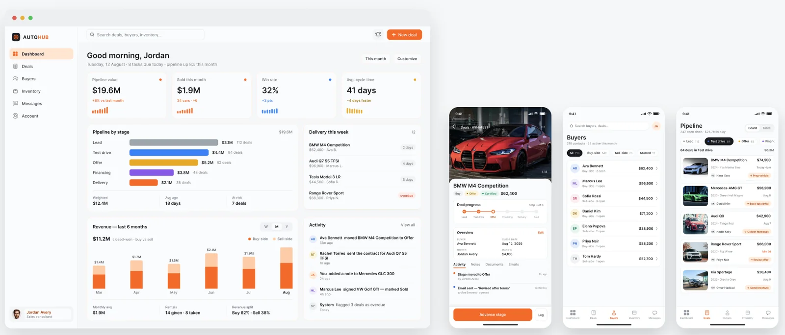
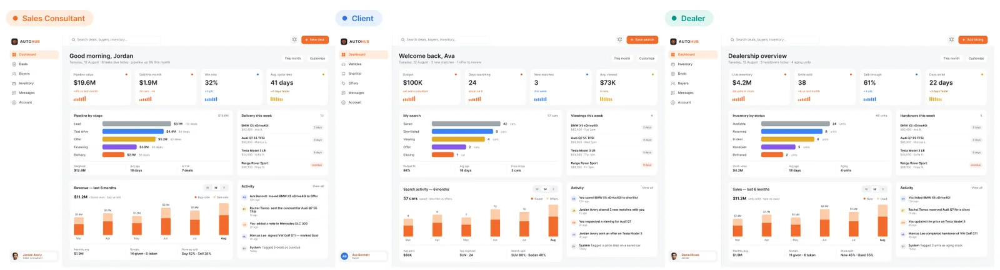
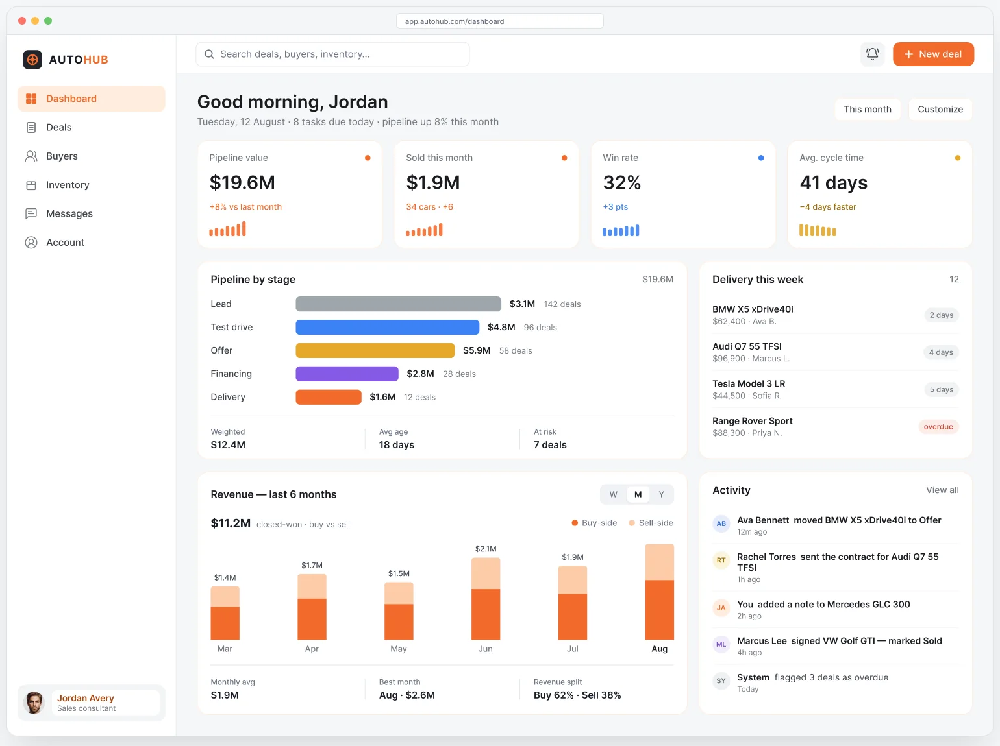
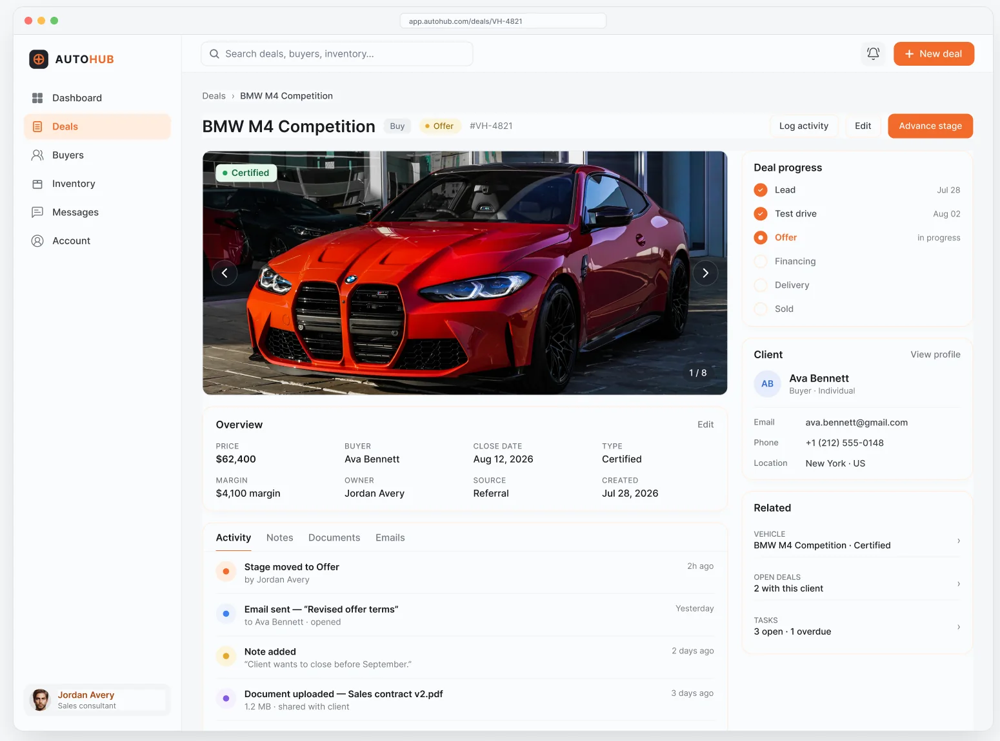
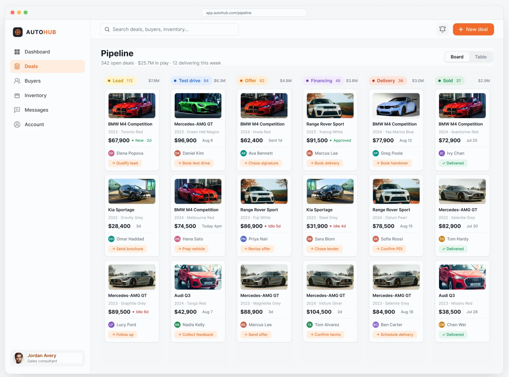
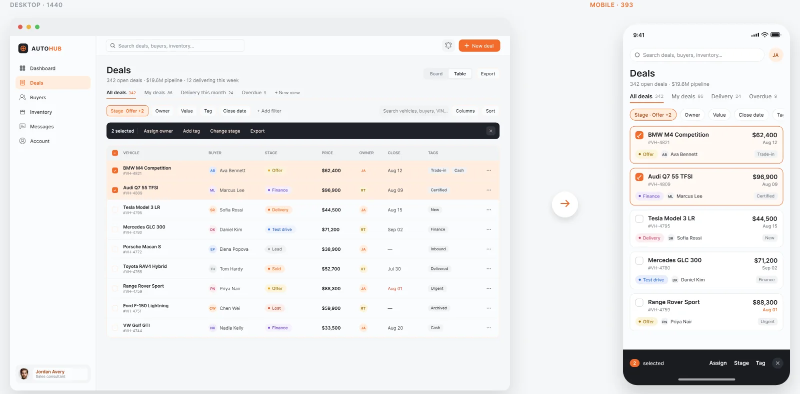
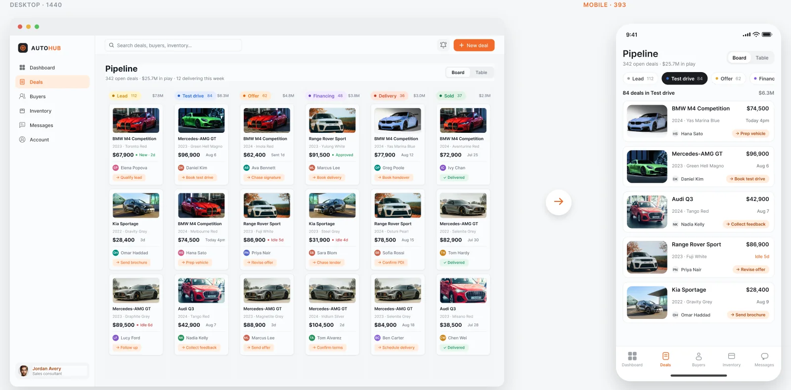
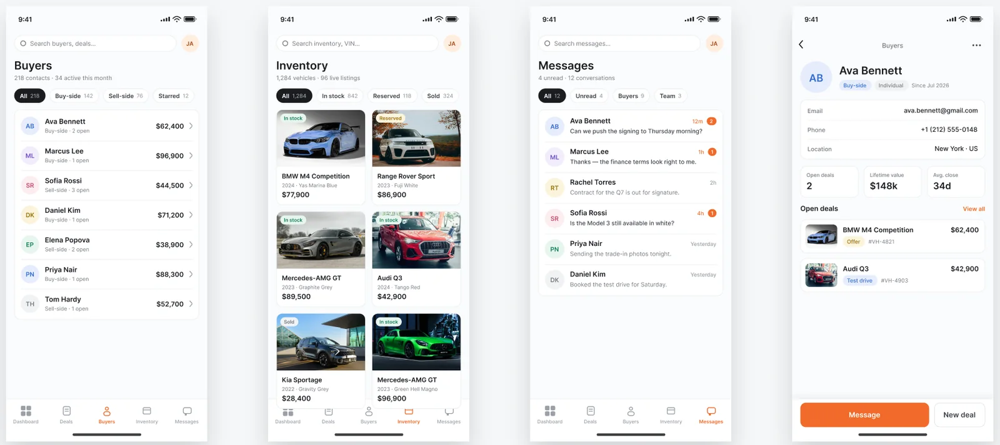
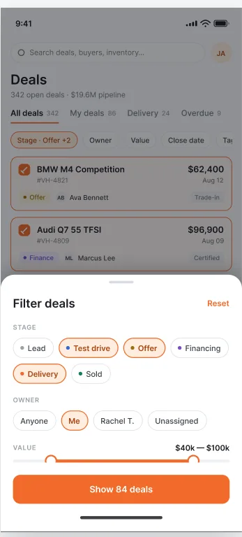
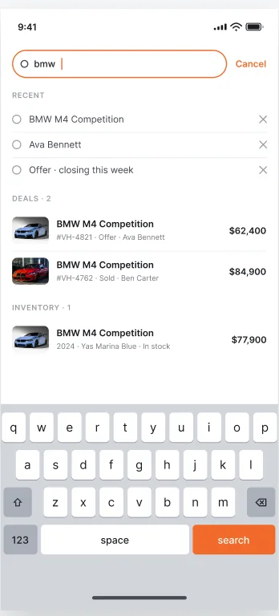

04 · Dealership CRM · Desktop + mobile
One CRM, designed twice.
A multi-role automotive CRM where sales consultants, clients and dealers work the same deals. I designed the 1440px desktop platform, then, once it shipped, re-authored it for a phone: same data, same roles, same vocabulary, rethought for one thumb.
Anonymised product concept, based on real enterprise work under NDA.
The case in 30 seconds
- The problem
- A multi-role dealership CRM built for a 1440px screen had to work on a phone, without changing its data, roles or vocabulary.
- What I did
- Designed the desktop platform, then re-authored it for mobile: tables became card rows, the six-stage board became stage tabs, and a filter sheet and search overlay were added.
- The result
- One product, two form factors: 10 mobile screens, six navigation items fitted into five tab slots, and nothing scrolls sideways.

01 — Product architecture
Same deals. Three products.
A B2B2C car platform. Clients, sales consultants and dealers all work the same deals, but each sees only the slice their role touches.

Buy-side searches and sell-side listings, deals in progress, and today's actions.
Their consultant, shortlist and offers. None of the internal data or other clients.
Their inventory, live demand on it, deals touching their stock, and their team.
02 — Role-aware dashboard
The day's priorities, the moment you sign in.
Pipeline health, revenue and what needs attention today, tailored to the person looking at it rather than a generic overview of everything.

03 — The deal record
A deal, in full.
Every deal on one record: buyer, vehicle, documents, communication and a six-stage process, with a live timeline and role-based actions.

Everything reads top to bottom: the car, the client, the history, the next step. No tab-hopping to piece a deal together.
04 — Pipeline board
Six stages, and friction only where it's earned.
The pipeline board shows every deal by stage. The interesting decisions were about moving deals between stages, not about drawing the board.

Advancing a stage is frequent and reversible, so a dialog every time is friction. Only the move to Sold confirms, and it lists what changes: commission locks, the car leaves inventory, reopening needs a manager.
Every other advance happens at once, with an Undo in the toast. The mistake is cheap to fix, so it shouldn't be expensive to avoid.
A gap where the card was, a highlighted drop zone, an insertion line, and a live “+1 · $5.8M” on the target stage, so the result is visible before release.
05 — What was asked, and how it was made
Adaptation, not redesign.
The desktop product had already shipped, so nothing in the data model, the roles or the vocabulary could move. The job was to make a multi-role CRM built for 1440px genuinely usable on a phone.
What made it hard
Something had to leave the tab bar without becoming unreachable.
Both are core screens. Neither survives a 393px viewport by getting narrower.
The mobile set had to be built from the tokens and patterns the desktop already used.
How I made it
Screen by screen, separating what only needed to stack from what breaks structurally. Eight screens have a desktop counterpart: six reflowed, two did not.
The deals table became card rows with a fixed numeric anchor. The pipeline board became stage tabs, trading the whole-pipeline glance for one-thumb reach, deliberately.
Every remaining list reuses the same card row; every detail view pins its primary action. Consistency did the work, not invention.
A filter sheet and a search overlay: surfaces a 1440px toolbar never required, both drawn against the keyboard-visible viewport rather than the full 852px.
06 — Rebuilt, 1 of 2
Seven columns of deal data. One thumb.
A table has nowhere to go on a phone. The row became a card that answers “which deal needs me?” in one glance.

Vehicle, buyer, stage and value stack into one tap target instead of seven columns.
Desktop sorts by column header. A phone leads with the deal that needs an answer today.
Selecting deals swaps the tab bar for an action bar: assign, change stage, tag.
07 — Rebuilt, 2 of 2
Six pipeline stages side by side. On a phone, one at a time.
The board keeps its shape: stages become tabs, so you never lose where a deal sits.

Six columns will not fit. One stage at a time, the other five one tap away.
Count and value per stage sit in the tab, so the whole board is still readable.
You give up seeing all six stages at once. Naming that is part of the work.
08 — The rest of the app
Four more destinations, one set of rules.
Once the two hard patterns were settled, the rest was a matter of applying them consistently: card rows for lists, a right-aligned numeric anchor, a photo grid where the content is visual, and a sticky primary action on every detail view.

Lifetime value takes the right-hand anchor that price holds elsewhere.
Here a grid beats a list: the vehicle photo is the content.
Carried by weight and by count, because a coloured dot alone fails in bright sunlight.
Contact rows, three stats, open deals, and Message and New deal pinned to the bottom.
09 — Patterns the desktop never needed
Two screens with no desktop equivalent.
Adapting a product is not only shrinking what exists. A 1440px toolbar can hold filters and search inline; a phone cannot, so both became surfaces of their own, designed for the thumb rather than the cursor.

Filter sheet
Filters live where the thumb rests, and the list stays visible above the sheet.
Stage keeps its colour coding from the board, so a chip is recognisably the same object.
“Show 84 deals” commits and reports in one control.

Search
Deals, inventory and people are different things; one flat list would make the user do the sorting.
Search history is a small privacy surface; each entry can be cleared on its own.
Roughly a third of the screen is keyboard while search is open, so the layout was drawn against 560px.
In short
Adapting a product is deciding what to give up. Naming the cost is the case.
A desktop CRM that sales consultants live in all day, and a phone version that works from the lot, not the office: one product, one set of tokens, two very different hands holding it.